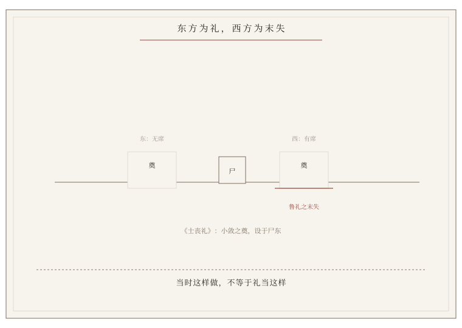

檀弓上 · 三·八十三 · 第 286 课
小斂之奠，子游曰：「於東方。」曾子曰：「於西方，斂斯席矣。」小斂之奠在西方，魯禮之末失也。
说什么事：小敛时的祭奠，子游说该在东方；曾子却说在西方，还说敛时就着这张席设奠。经文最后一句替二人定了案：小敛之奠在西方，是鲁国礼制末世失法之处。
落在哪一层：礼文之正误。论「当时如此，未必礼当如此」。
为何编在此位：上节曾子与仲梁子辨「帷堂」之由，此节曾子与子游辨「奠」之位。一辨理由，一辨位置，而此节的曾子是错的。
【经】小斂之奠，子游曰：「於東方。」曾子曰：「於西方，斂斯席矣。」小斂之奠在西方，魯禮之末失也。
【注】曾子以俗說非。又大斂奠於堂，乃有席。末世失禮之為。
【疏】依礼，小敛之奠设于东方，奠又无席；鲁之衰末，奠于西方而又有席。曾子见时如是，谓将为礼，故云小敛于西方。「斯」，此也；其敛之时，于此席上而设奠矣。曾子之言失礼，故记者正之云：小敛奠所以在西方，是鲁人行礼，末世失其法也。知曾子所言非者，案《士丧礼》「小敛之奠，设于尸东」，今曾子言西方，故为非也。云「大敛奠于堂，乃有席」者，案《士丧礼》「大敛之奠设于室」，今云堂者，后人转写之误，当云奠于室，故郑答赵商：「堂当为室也。」
小敛之奠 小敛时设的祭奠。奠，为死者设饮食之礼。
于东方 / 于西方 席位在尸之东或之西。《士丧礼》作「设于尸东」，即东方为正。
敛斯席矣 敛时就着这张席设奠。斯，此。
末失 末世所失。末，衰世。
大敛奠于堂 注文，然疏谓「堂」当作「室」，是转写之误。
小敛时的祭奠，子游说设在东方，曾子说设在西方，还说敛时就着这张席设奠。小敛之奠设在西方，是鲁国礼制末世失法之处。
此节在《檀弓》里很特别：弟子被否，而且是记礼者亲自下的判词。
结构三层。子游说东方，曾子说西方，两说相争；然后经文自己出来断案：「小敛之奠在西方，鲁礼之末失也」——西方不是礼，是鲁国末年失去正法之后的做法；曾子把当时看到的样子当成了礼。
注补一句「曾子以俗说非」——他把俗当成了礼。
疏给出两条经证：《士丧礼》「小敛之奠设于尸东」，是东方之证；「大敛之奠设于室」，今注作「堂」是转写之误，郑答赵商已经改过。
所以此节有两件事：一件是奠在东还是在西；一件是「曾子看着当下就在当下」。
第一层 「俗」与「礼」的分界在哪里 曾子看见鲁国人都把小敛之奠设在西方，还铺席，便以为这就是礼。他没有问：这是礼，还是这家人这样做？这一问不问，俗就成了礼。
第二层 记礼者为何要亲自断案 《檀弓》多记问答，少下判语。此节特意加一句「鲁礼之末失也」，是为了不让读者把曾子的话当定论。这一句是编书人的负责：他不但记录了两说，还告诉后人哪一说错在哪里。
第三层 席之有无的分量 疏说得细：「依礼，小敛之奠设于东方，奠又无席。」东方是一条，无席又是一条。鲁人不但挪了位置，还加了席。加席是加文——礼之末世往往不是减，是加：多加一道席，多摆一件器，看着更周到，其实已失其本。
第四层 与 285、278 合看 285 郑否仲梁子，278 有子否曾子，286 记礼者否曾子。三处都是「否定」，而否定的标准始终一样：以礼文为准，不以说话人的身份为准。曾子是孔门高弟，错了也照记。
与今日何干 今人办事，最常见的错是把「大家都这样」当「应当这样」。此节给的方法很硬：去找那一条文。找得到，就按文；找不到，就承认这是俗。俗可以行，但不能顶礼之名。
| 左 | 右 |
|---|---|
| 子游：于东方 | 合于《士丧礼》 |
| 曾子：于西方 | 据鲁俗为说 |
| 敛斯席矣 | 又加一席 |
| 小敛之奠在西方 | 鲁礼之末失 |
| 曾子以俗说非 | 注之断 |
| 奠本无席 | 加席是加文 |
| 末世之失多在加 | 不在减 |
| 记礼者亲自断案 | 不以人废言，亦不以言废礼 |
画一间堂屋的局部，视点略俯。地面中央铺着一张空席，席上置一只素器（无盖）。席的左侧另有一小片空地（干净、无物）；席的右侧却另铺着一张席，席上多摆一只同样的素器（两席两器，一在左一在右）。一位深衣者立于两席之间，手指向右侧那张席。不写文字、不画人面细节。赭色只用在右侧多出来的那张席的席边，与那只多摆的素器的口沿。
